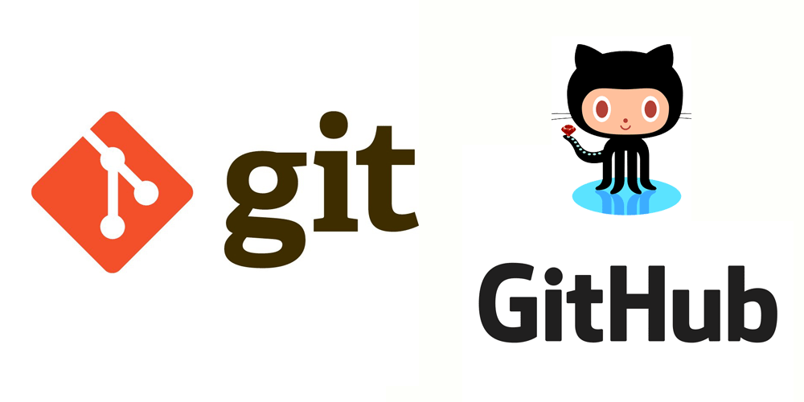
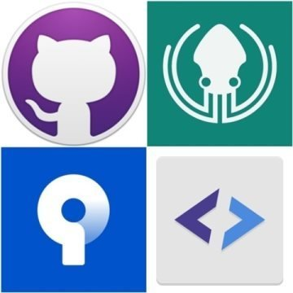
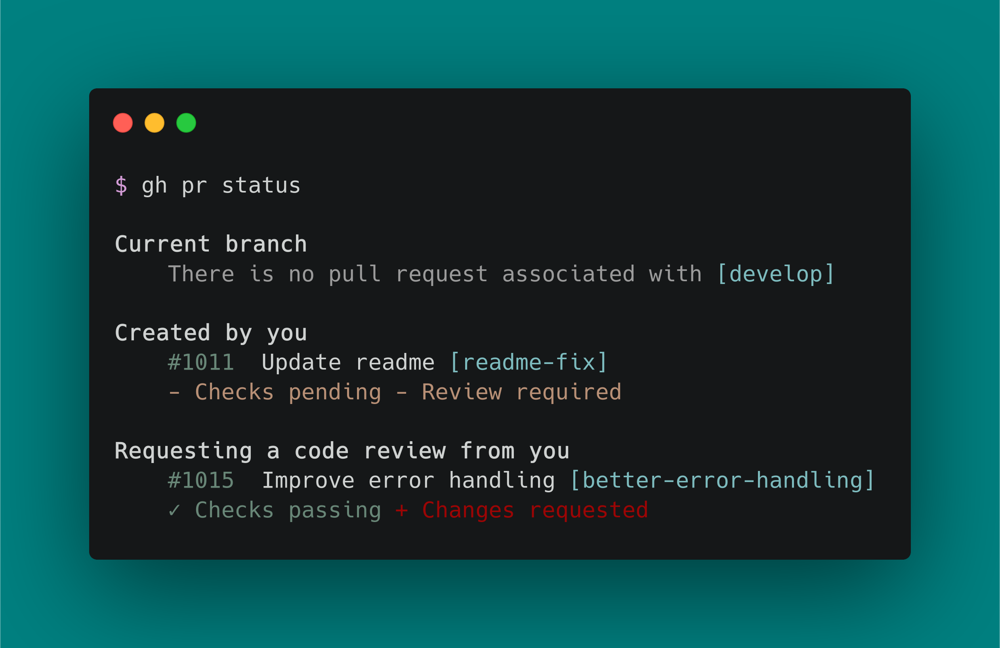
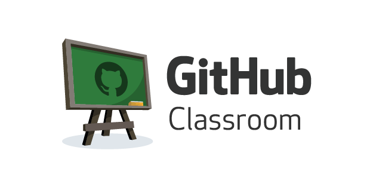

Programowanie i Projektowanie obiektowe
Podstawy Git
Krzysztof Grochot
grochot.github.io
28.02.2022r.
Kurs na platformie UPEL
pass: PiPO2022
Git to rozproszony system kontroli wersji stworzony przez Linusa Torvalds'a. Rozpowszechniony jako wolne oprogramowanie.

Git jest narzędziem, dzięki któremu można kontrolować zmiany w plikach.Rozwiązanie bez CLI: klienta Git

Git CLI

Podczas zajęć będziemy korzystali z platformy GitHub

Podstawowe komendy Git
git clone #kolonowanie repozytorium
git config -l #sprawdzenie konfiguracji repo
git config --global -e #globalna konfiguracja
git pull --rebase #aktualizacka repo
git status #status zmian
git add . #dodanie zmian do staging
git commit -m "kometarz" #skomittowanie
git log -p #skomittowanie Podstawowe komendy Git
git log --graph --pretty=format:"%h - %an, %ar: %s"
git config --global alias.lp "log --graph
--pretty=format:\"%h - %an, %ar: %s\""
git config --global alias.lp "log --graph
--pretty=format:\"%h - %an, %ar: %s\""
git commit --amend
git reset --hard
git push
git branch
git init
git remote add origin [tu link] Prezentacja działania Git
JupyterLab
 JupyterLab.com
Google Colab
JupyterLab.com
Google Colab